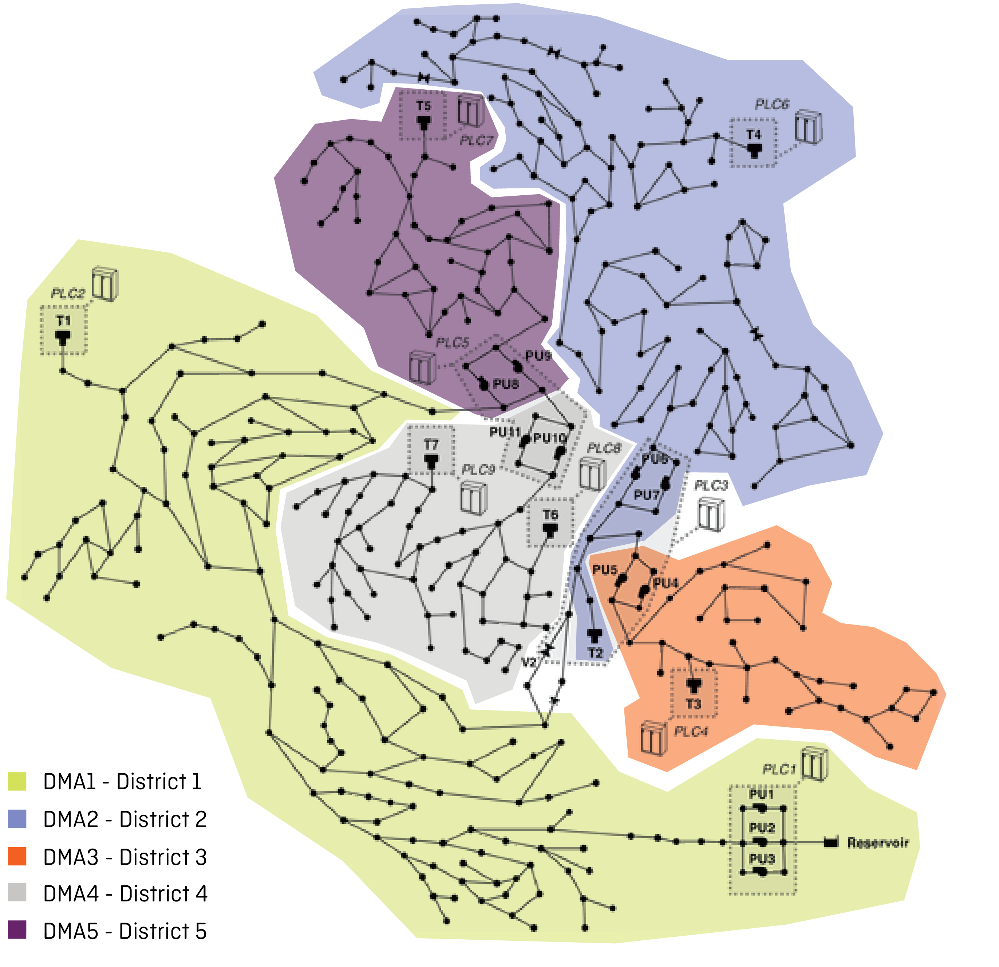

SECOND PROTOTYPE
This Prototype includes 4 different Scenarios based on a different structure of the data-to-mapping strategy. In each Scenario, five different sounds represent the five districts.
In Scenarios 1, 2 and 3, a different sound is associated to each district . The behaviour of each sound over time depends on the numerical value of the anomaly as it comes from the algorithm. In scenario 4, districts are identifiedby the order they play, while the level of anomaly is represented by a change in the pitch of each sound.
Here, you can listen to how the 4 Scenarios would sound in a regular status, a status with a low and a high level of anomaly. Each Scenario is repeated two times.

In Scenarios 1, 2 and 3, a different sound is associated to each district . The behaviour of each sound over time depends on the numerical value of the anomaly as it comes from the algorithm. In scenario 4, districts are identifiedby the order they play, while the level of anomaly is represented by a change in the pitch of each sound.
Here, you can listen to how the 4 Scenarios would sound in a regular status, a status with a low and a high level of anomaly. Each Scenario is repeated two times.
SCENARIO 1 - Delay
SCENARIO 2 - Length
SCENARIO 2 - Repetition
SCENARIO 4 - Pitch